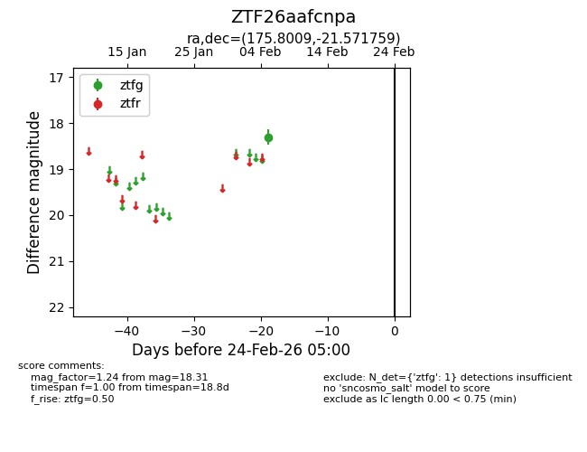
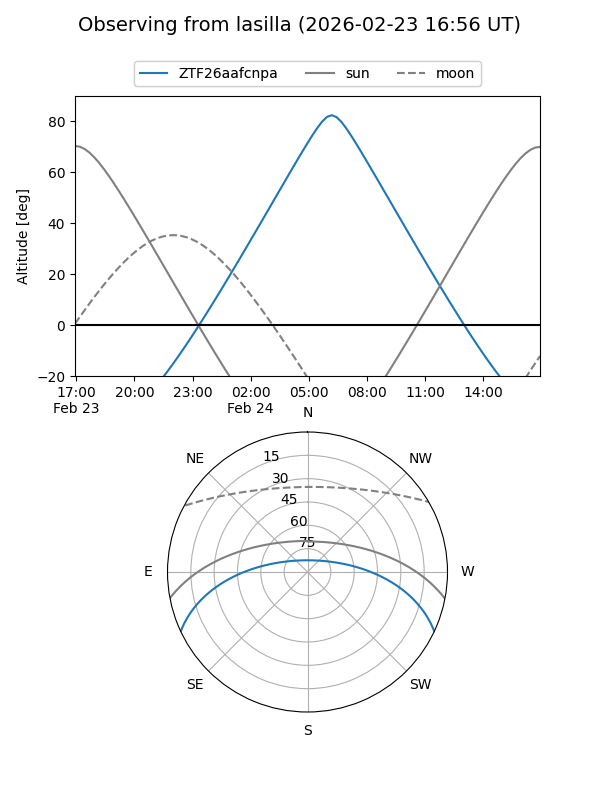
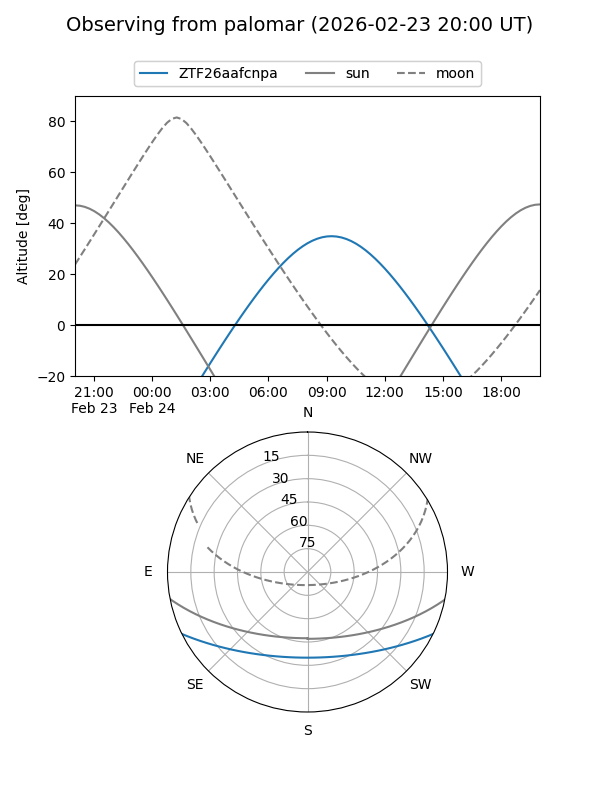

ZTF26aafcnpa
Target ZTF26aafcnpa at 2026-02-24 09:08
Aliases and brokers:
FINK: link
Lasair: link
ALeRCE: link
alt names
ZTF26aafcnpa (ztf,fink_ztf)
Coordinates:
equatorial (ra, dec) = 175.8009,-21.57176
equatorial (HMS+DMS) = 11:43:12.22,-21:34:18.33
galactic (l, b) = (282.5081,+38.57873)
Flags:
Photometry:
last ztfg=18.31
1 ztfg detections
Lightcurve

Visibility


Additional plots